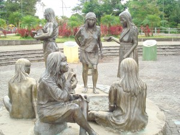

PARQUE PEDAGÓGICO ETNO-BOTÁNICO OMAERE
Realiza recorridos dedicados a promover la conservación del bosque húmedo tropical y revalorizar la cultura indígena de las etnias amazónicas. Grado de dificultad: Ninguna
FINCA SARAHI Acuario localizado en la Finca de Sarahi

JARDÍN BOTÁNICO LAS ORQUIDEAS Recorrido por los senderos para observar plantas ornamentales, orquídeas y la vegetación natural del bosque.
PARQUE REAL DE AVES EXÓTICAS Turismo y reconocimiento de aves nativas y exóticas Grado de dificultad: Ninguna
PASEO TURÍSTICO DEL RIO PUYO Se realiza actividades deportivas como caminatas, natación, trote, canotaje, bajar el río en boya, parrilladas, etc.
MUSEO ETNO-ARQUEOLÓGICO DE PUYO Conocer la arqueología de los antepasados amazónicos y las nacionalidades indígenas de Pastaza.
ARTESANÍAS EN BALSA Observación de la elaboración de figuras decorativas en balsa, Observación de los productos terminados en el almacén, fotografías y observación de muestras artesanales.
CATEDRAL DE LA CIUDAD DE PUYO Participación de las ceremonias religiosas de la comunidad cristiana, observación de la tradición y cultura religiosa, visita a la Catedral y Vicariato de Puyo.
PARQUE ACUÁTICO MORETE PUYO Es un complejo de piscinas compuesto por una piscina de olas, juegos imperativos de niños, piscina semi olímpica, piscina de clavados, turco, hidromasaje, bar, restaurante, sala de eventos y recepciones. Costos: $1,50 Niños, $3,00 Adultos
MONUMENTO AL ARTESANO Se edificó una estructura de un hombre que simboliza el trabajo y esfuerzo de quienes trabajan en la elaboración de las figuras en balsa. La estatua tiene una altura de 4 metros, es un hombre indígena que está vestido de ropa de la cultura mestiza, en sus manos tiene un pincel y un pedazo de balsa a la que le esta dando la forma de una de las principales muestras de artesanía de balsa. En la noche es iluminada
ARTESANÍAS EN CHONTA Observar la variedad en la elaboración de artículos de chonta y adquirir hermosos adornos y recuerdos.
MUSEO ÉTNICO DEL COLEGIO PASTAZA
